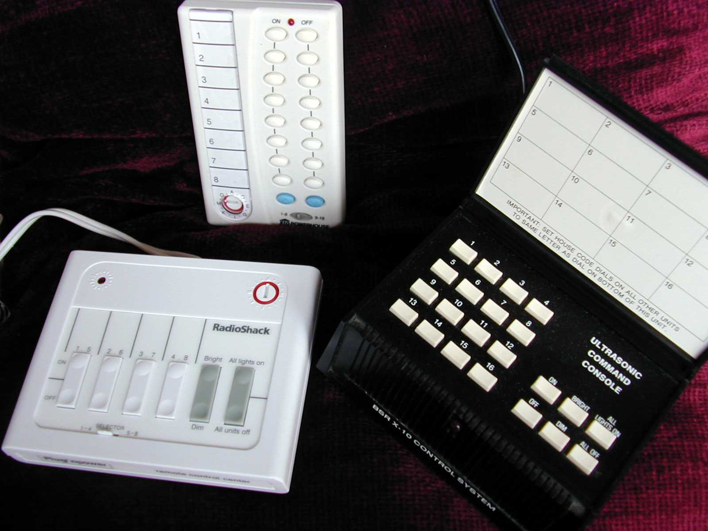
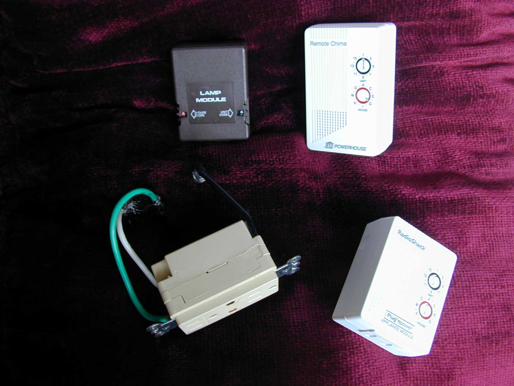

1978
BSR/X10 Command Console
The first home-automation controller: a wedge of plastic whose rotary house-code dial and unit button grid command your whole house over the power line

Overview
Deep dive
Media
